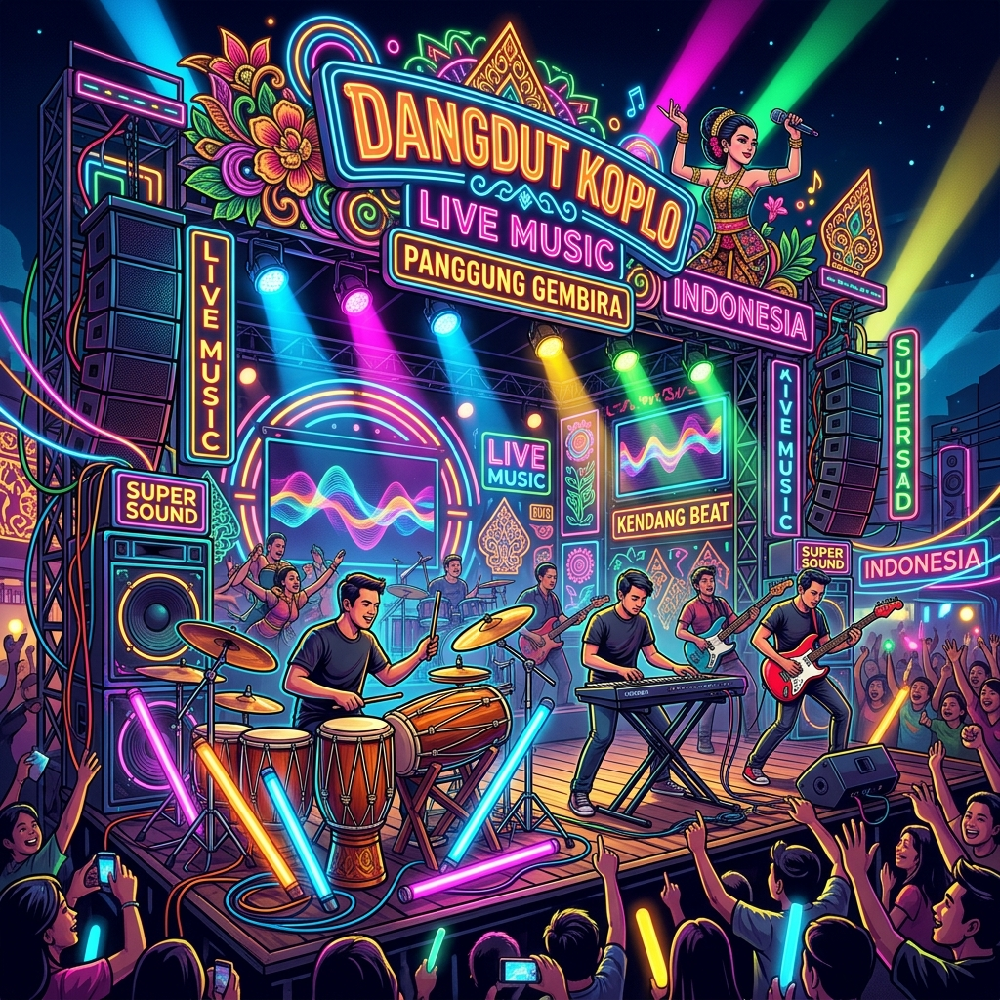

Evolusi Dangdut Koplo: Raja Musik Digital

Siapa sangka musik yang dulu sering dianggap sebelah mata kini menjadi penguasa di berbagai platform streaming digital? Dangdut Koplo telah bertransformasi dari hiburan panggung rakyat di pesisir Jawa Timur menjadi genre global yang disukai berbagai kalangan.
1. Akar Kultural dan Ketukan Kendang
Dangdut Koplo bukan sekadar dangdut biasa. Ciri khas utamanya terletak pada permainan instrumen Kendang yang lebih kompleks, cepat, dan enerjik dibandingkan dangdut konvensional. Lahir di era 90-an di daerah Jawa Timur, genre ini membawa semangat 'bebas' dan 'berani' dalam berimprovisasi.
Ketukan yang dikenal dangan istilah "Koplo" ini sebenarnya adalah hasil eksperimen para musisi jalanan dan orkes melayu yang ingin menciptakan nuansa yang lebih mengajak orang untuk berdendang secara aktif.
2. Era Digital dan Meledaknya Tren TikTok
Revolusi sejati Dangdut Koplo terjadi saat media sosial seperti TikTok mulai mendominasi. Musik dengan tempo cepat dan hook yang kuat sangat cocok dengan durasi video pendek. Banyak lagu pop Indonesia yang kemudian di-remix menjadi versi "Koplo Bass" dan langsung meledak menjadi tren global.
VCMusic mencatat bahwa kategori "Koplo Bass Joss" secara konsisten menduduki peringkat tiga besar kategori yang paling sering diputar oleh pengguna kami setiap bulannya.
Trivia Musik
Lagu koplo modern seringkali menggabungkan elemen dari genre lain seperti EDM, Reggae, hingga K-Pop, menjadikannya salah satu genre paling adaptif di industri musik saat ini.
3. Masa Depan: Go International
Dengan banyaknya artis luar negeri yang mulai bereksperimen dengan nuansa dangdut, tidak heran jika Koplo akan menjadi komoditas ekspor budaya utama Indonesia di masa depan. Kualitas produksi yang semakin baik menjamin genre ini tetap relevan di pasar global.
Kesimpulan
Dangdut Koplo adalah bukti bahwa musik tidak mengenal batasan kelas. Ia adalah bahasa kegembiraan yang kini telah menemukan rumah barunya di dunia digital.
Ingin mendengarkan kurasi Koplo terbaik? Putar koleksi Dangdut Koplo kami sekarang.
VCMusic Editorial Team
Mengkurasi tren dan budaya musik terbaik untuk Anda.